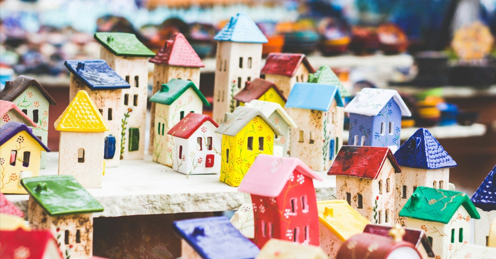

毎日の生活に追われている時ほど、小さな幸せを大切にする。当たり前にある安らぎに感謝を伝える。特に最近意識していることだ。
みんな利己的でいいではないか。
通勤途中、多くの人たちでごった返す雑踏に出くわすと、あたかもそんな雰囲気で開き直る都会の風。その様子に思いがけず苦笑いを浮かべてしまう朝もあるけれど、穏やかな生活や今ある習慣を守るため、今日も目の前にある物事に心血を注いでいく。
それはさながら、大相撲で時間いっぱいになった際に気合いを入れる力士のように、自らの魂を奮い立たせる。その先に待っている“熱中”と合流さえできれば、あとは雑音も気にならないほどの自分の世界。時間はみるみるうちに過ぎ去ってしまうのだ。
30代に差し掛かると、自身が何に向いていて何が不得意なのか、何が好きで何が苦手なのかがうっすらわかってくるし、それらは嫌でも目に入るようになる。
今の僕にはリーダーシップのかけらもないし、チームを引っ張ろうとする気概も一切ないが、こんな人間でも、高校時代に所属していた生徒会では生徒会長を務めたこともあった。今では微塵も信じられない過去のひとつである。
そもそも同学年に責任ある立場になりたい人が誰もいなくて、世紀のじゃんけん大会で一発負けした不運もあり渋々その立ち位置になったのだが、偶然にもその経験があるからこそ「立場が人を育てる」云々の話を、今は多少なりとも信じられる人間になれたのかもしれない。
日々従事する労働や地位がその人を形成する。
それは別に仕事に限っての話でもないはずだ。普段から自分のルーティンや大切にしている存在に変わらぬ愛をもって接し、どんな日でも継続していくことが、その人がその人らしく育っていくきっかけにもなるし、環境に左右されずに豊かな人格が形作られていく要因にもなるのだと思う。
そう考えた時、僕はいくつになっても小さな幸せを見つけられる人間でありたいし、いくら生活のためとはいえど、仕事に押しつぶされたり心身を削られたりするような未来は描きたくない。
そう思うこと自体、“ささやかな幸せ”だと言ってしまうと何だか寂しくもなるけれど、でもそれが今の僕の未来地図であり、これから進むべき方角なのは間違いなさそうだ。